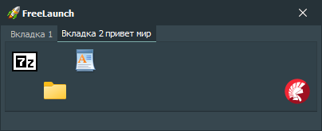

FreeLaunch - это бесплатный менеджер ярлыков для операционной системы Microsoft Windows. Он позволяет организовать ярлыки для ваших программ, файлов и каталогов. FreeLaunch является легко и полностью настраиваемым.
Возможности:
-
Запуск программ, открытие файлов и каталогов
Вы можете запустить приложение, открыть файл или каталог, нажатием одной кнопки.
-
Запуск программ с заданным приоритетом и положением окна
Вы можете задать приоритет и другие параметры запуска для каждого приложения.
-
Настраиваемое количество вкладок и кнопок
Вы можете использовать до пятидесяти вкладок, каждой из которых может быть присвоено свое имя. Приложение позволяет разместить на одной вкладке до ста рядов и столбцов на каждой вкладке.
-
Настраиваемый размер кнопок
You can change the size of the buttons if you are not satisfied with the standard size.
-
Перетаскивание файлов и каталогов
При перетаскивании файла на кнопку с каким-либо приложением, файл может быть открыт в этом приложении.
-
Перетаскивание вкладок и кнопок
При перетаскивании вкладок и кнопок вы можете изменить их местоположение и порядок.
-
Другие полезные функции и настройки